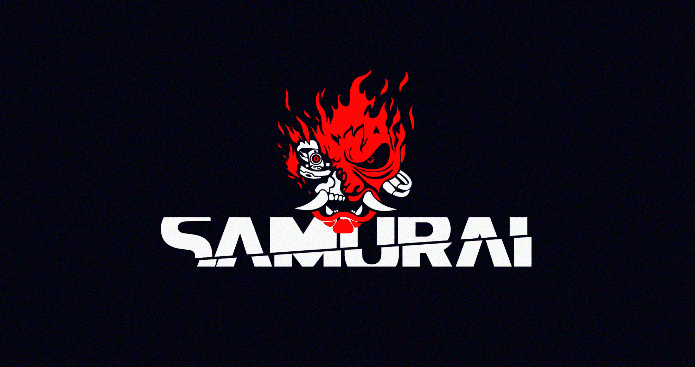
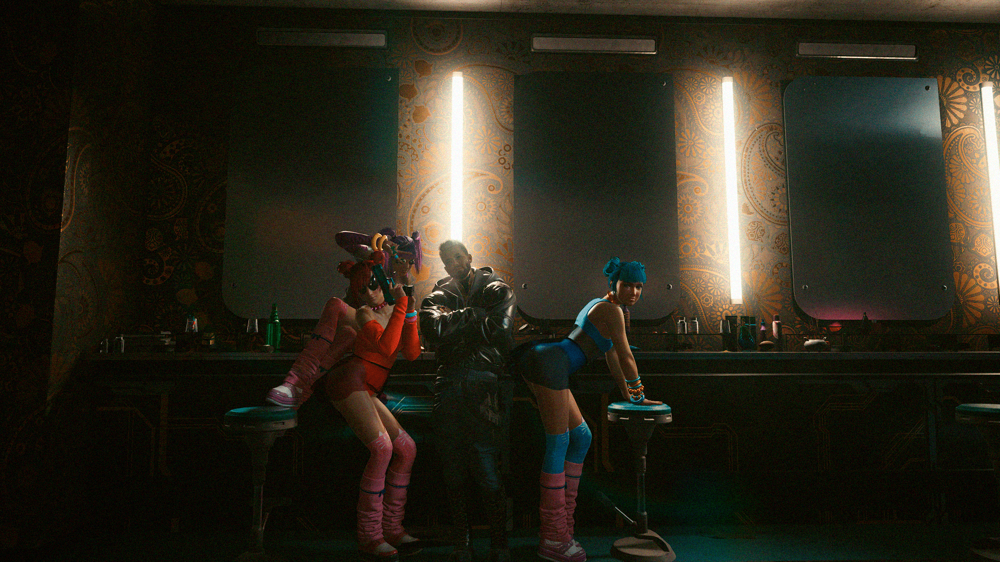

Originalmente fundada por Johnny Silverhand y Kerry Eurodyne, SAMURAI comenzó como una banda callejera, tocando en varios bares y clubes alrededor de Night City. Una noche de 2003, después de tocar en the Rainbow Cadenza, se acercó a la banda un hombre que se ofreció a firmarlos después de presenciar su impresionante actuación. Este hombre resultó ser nada menos que Jack Masters, el jefe ejecutivo de Universal Music en ese momento. En tres semanas, SAMURAI firmó, tenía un récord en producción y se preparaba para recorrer todas las ciudades importantes del mundo.


